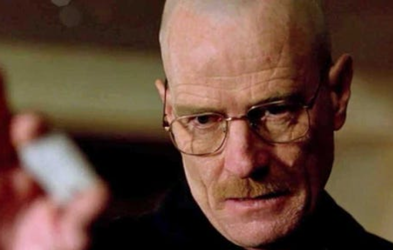

Walter Hartwell White Sr. is a highschool chemistry teacher that was diagnosed with Stage III lung cancer. Due to insuficient fund to support his medication he decided to use is skills and knowledge to create the most pure meth in Albuquerque. Although Walter created the product he doesn't know how to sell it, that's when he looked for his student Jessie Pinkman and made him his business partner and as jessie was the one looking for buyers and selling the products in the street...Learn More
These are some of the movies and series Walter White appeared:
This is a series about how Walter White and Jessie Pinkman started their drug business...
A breaking bad movie
Learn more
A breaking bad Spin-off
Learn more
Checkout this gallery for more Walter White's appearances in movies and series.
